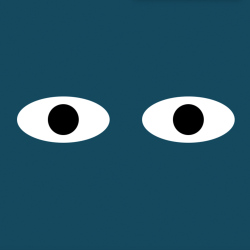

This exercise generates a PacMan each time a user pushes the button titled "Add PacMan". When the user selects "Start Game" they are dispersed in different directions within the bounds of the user's page.

This exercise generates eyes that follow the user's cursor around the window. This combines our knowledge from the course in HTML, Javascript, and CSS.
This tracker is a program which tracks 1 bus on a route between MIT and Harvard (in real-time). Every 15 seconds a new marker is added to the map with the bus' current location. This exercise utilizes MapBox.